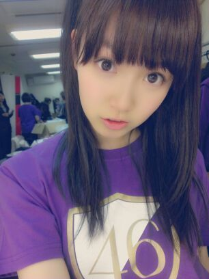

ZEPP TOKYO LIVE !!
物販にあった乃木Tだよー
アンコールのときに着たのよー

この写真が貼れてるってことは
ブログさんのクリスマス休暇が終わった
てことですがさあどうだろう。
みんなともね写め撮ったからね
早くみてほしいんだけどねー
さて。
昨日のライブが2012年の集大成だった
わけなんですが
えーいかがでしたでしょうかねー
1stから4thまでのいろーんな曲が
ぎゅぎゅっと詰まった
素敵なセトリだったと思います(^^)
いつか海流もやりたいねー♪
えーと
んーと
いろんな思い出がよみがえってきたり
改めて感謝の気持ちがわいたり
これからのことを考えたり
そんな忙しいライブだったけど
やっぱし強く思ったのが
ライブが好きだーって！
パフォーマンスしてる時が
いちばーん笑顔で自然体でいられる
ような気がするのねー
だから１年の最後に
みなさんの前でおっきいステージで
ライブができてほんとに幸せです(´;ω;`)
年末で平日でお忙しいなか
来てくれてありがとうございました！
昨日会えなかったみなさんに向けて
サプライズ発表をまとめると
3月13日 5thシングル発売、そして
1月6日放送の乃木どこで5th選抜発表。
乃木坂ふぁみりーのみなさんには
去年に引き継ぎ
どきどきわくわくの年越しですねー笑
地元に帰るメンバーはいっぱいいるけど
中元家は姉さんが
昨日から東京来てるー＼(^^)／
(＊´・ω・＊)ひめたん